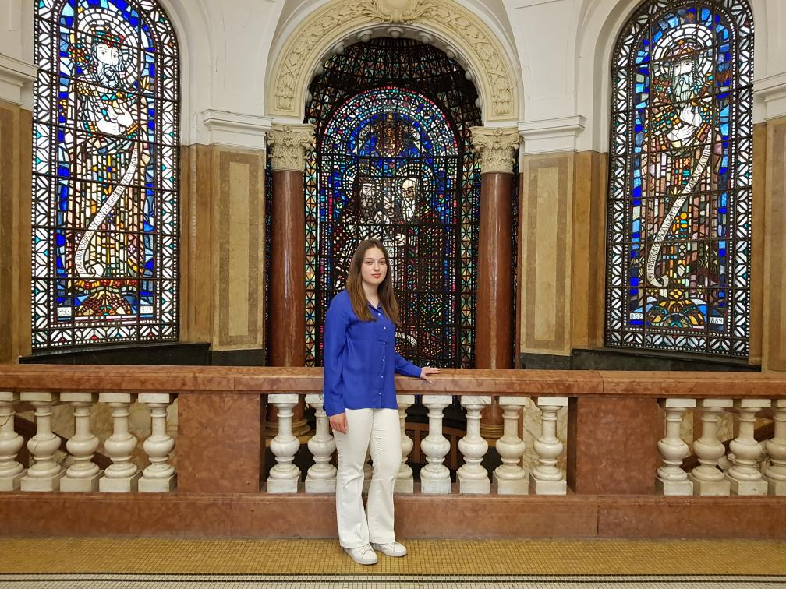

За мен
Казвам се Вяра Костадинова. Родена съм в София и от ранна детска възраст се интересувам от най-различни неща като финанси, програмиране, маркетинг, бизнес управление и други. Уча в НПГ по КТС гр.Правец , специалност "Системно програмиране". В свободното си време обичам да излизам, да ходя по мачове и да пътувам.
В момента се развивам в най-различни направления като работя по 3 проекта . Вярвам, че човек трябва да се развива във възможно най-много направления и да бъде любопитен към новото и непознатото.
Хобита и интереси